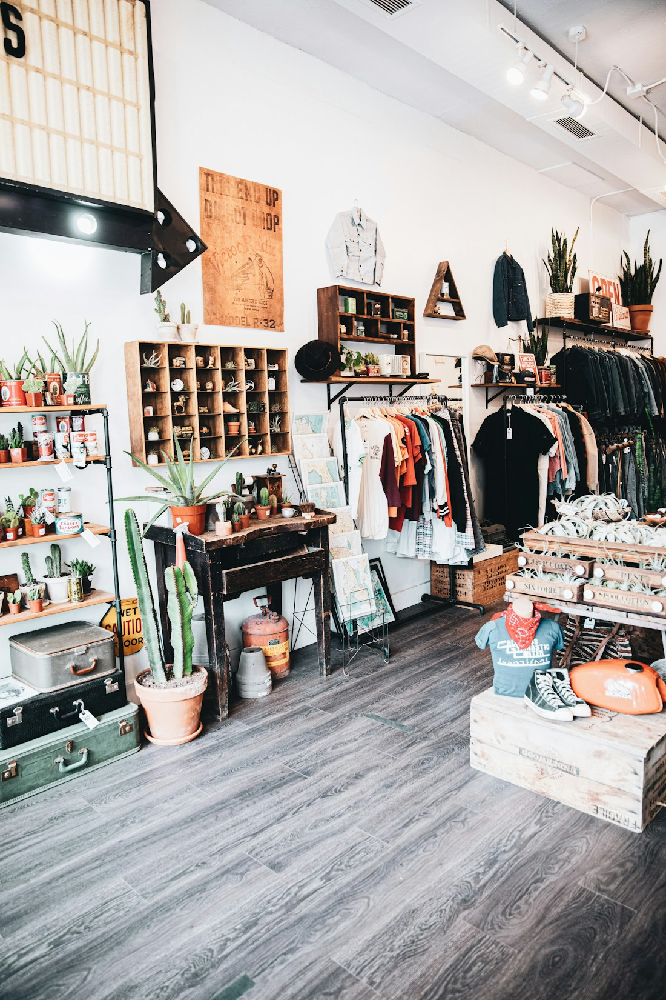
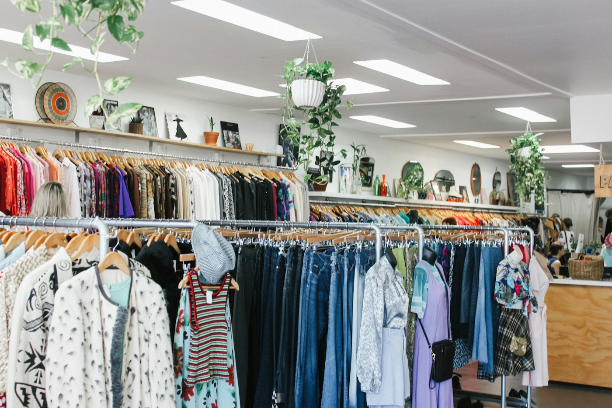
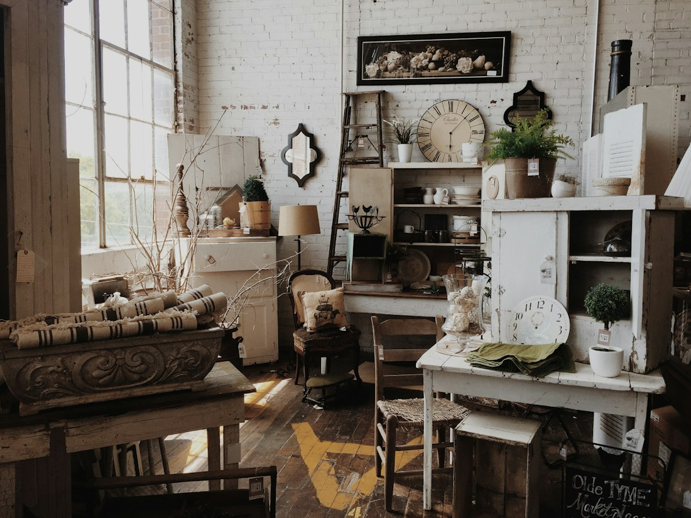

Illustrative shop photoMISSION DISTRICT
Second Story Vintage
Thoughtful leather, well-worn denim, and familiar pieces ready for another chapter.
Store detailsGOOD STYLE, ROOTED HERE
Three independent secondhand shops to explore, each with its own point of view. Names, addresses, hours, and inventory are examples for this class prototype.

Illustrative shop photoMISSION DISTRICT
Thoughtful leather, well-worn denim, and familiar pieces ready for another chapter.
Store details
Illustrative shop photoHAIGHT-ASHBURY
Colorful layers, soft tailoring, and standout finds with a relaxed, collected feel.
Store details
Illustrative shop photoHAYES VALLEY
Everyday staples and easy outerwear, chosen for good fabric and lasting wear.
Store detailsPLAN A VISIT
Example business information. Please don't use it for a real visit.
112 Valencia Street, San Francisco, CA
Mon–Sat 11 am–7 pm · Sun 12–6 pm
1632 Haight Street, San Francisco, CA
Daily 11 am–6 pm
425 Gough Street, San Francisco, CA
Tue–Sun 10 am–6 pm · Closed Mon